もっと輝く場所にしたい。
そのために、水族館同士で
協力し合うことが、重要だ。
館の密度、海の生物多様性、見せ方の独自性——
どこを切り取っても、日本の水族館は世界の最前線にいます。
日本動物園水族館協会（JAZA）加盟は49館。観光地併設や小規模館などの非加盟も含めると、全国に約165館。国土37.8万km²に対し、1万km²あたり約4.4館の密度で、ほぼ全都道府県に水族館がある。
近畿だけで主要10館以上——海遊館、京都水族館、神戸須磨シーワールド、ニフレル、城崎マリンワールド、アドベンチャーワールド、串本海中公園、伊勢シーパラダイス、姫路水族館、atoa、鳥羽水族館……。これだけの濃度で水族館が集まる地域は、世界に他にありません。
日本近海の海水魚は約3,700種——世界の海水魚の25%。地球の海のわずか0.9%にすぎない海域に、海洋生物全体で33,629種、世界既知の約15%が暮らしている。固有種約1,900種、大西洋全域より日本一国の海水魚の方が多い。
黒潮と親潮の合流点、世界級の深海溝、亜寒帯から亜熱帯のサンゴ礁まで——一つの国でこれだけの海洋環境を抱える国は、地球上に他にありません。
飼育員さん手書きの解説、SNSで世界に届く個性、都市と直結する水族館——研究最前線と、暮らしの近さが同時にある。これは日本独自の進化です。
加茂水族館はクラゲ展示でギネス2冠——種数約80、5m径の世界最大クラゲ水槽（米モントレーベイの常設は9種）。沼津港深海水族館は『水深200m以下を中心とした世界初の博物館』、シーラカンス標本を世界で唯一同時展示。鳥羽水族館のダイオウグソクムシ絶食記録は NPR・Smithsonian・BBC が連発で報道しています。
出典：日本動物園水族館協会（JAZA）、鳥羽水族館、沖縄美ら海水族館、List of largest aquariums 他、各館公式情報。
※ 種類数の世界順位に統一公的ランキングは存在しないため、各館公表値の比較として記載。
ジンベエザメ、ラッコ、クラゲ、深海生物、瀬戸内の小さな魚たち—— どの館にも、その館にしかない物語があります。
その魅力は、すでに世界最高水準。
来館者の支持も、しっかり集まっている。
——ただ、満員でも、未来を一館の力で描くのは難しい。
80〜90年代に開業した館は30年改修期を迎え、改修費は1館で100億円規模が常態です。餌・エネルギー・薬品コストはこの5年で2〜4割上昇。名古屋港水族館（来館者全国3位）は約500億円の改修費に対し積立金は8億円、改修計画の発表は延期されたまま。須磨海浜水族園は閉園、葛西臨海水族園は老朽化で営業を終え、のとじま水族館は地震でジンベエザメを失いました。
個別の館では、もう守りきれないものが、確実に出始めている。
だからこそ、業界の力を、ひとつに束ねたい。
御朱印や、温泉巡りのような、
日本の「文化的習慣」に
なったとしたら？
子供たちが、夏休みに水族館を巡って学びを深める。
大人が、年に何度も推しの生き物に会いに行く。
海外からの旅人が、日本の水族館を巡るために来日する。
これは、誇張ではなく実現可能な未来です。
日本にはそれだけの水族館の密度と質がある。
あとは、巡るための「文化」を、業界自身が作るだけ。
ある館で生まれた感動が、別の館への期待を育てる。
これは奪い合いではなく、増やし合いです。
ひとりの水族館ファンが年に1館を訪れる世界と、
ひとりのファンが年に5館を訪れる世界。
どちらが業界全体を豊かにするかは、明らかです。
水族館は、単なる娯楽施設ではありません。
学術的な意義を持ち、子どもたちの好奇心を育み、
海洋生物への理解を次世代に渡す、社会のインフラです。
水族館を愛する人たちが集まって、
水槽を見ながら、お酒を飲み、
互いの館の物語を語り合う。
それ自体が、業界の未来を変える
最初の一歩です。
制度や仕掛けは、後から自然に生まれます。
本当に必要なのは、まず同じ志を持つ仲間が、同じテーブルにつくこと。
今日のこの食事会は、その第一回。
次回は、どこかの水族館を中継しながら、皆で語り合えたら——という構想もあります。
ここから先は、思想を形にする具体です。
詳細は今日決めるものではありません。輪郭だけ。
ワンタイムの来館から、
年に何度でも巡る関係へ。
一館単独の年パスでは、「他の館にも行きたい」がそのままコストになる。共通年パスは、その心理的・経済的な壁を消し去ります。1年に5館を巡る人が増えれば、業界全体の来館頻度そのものが変わる。神戸のびのびパスポートが既に実証している効果を、関西全域・全水族館に広げます。
紙の本に、
自分だけの水族館人生が積み重なる。
御朱印帳が寺社巡りを「文化」にしたように、コンプ図鑑は水族館巡りを「文化」にします。デジタルでは生まれない、持ち物としての愛着、物質を集める喜び、家族や友人に見せたくなる重み——これらが、巡るための継続的な動機を作る。年に何度も持ち歩き、十年経っても本棚に残る一冊になります。
鑑賞の時間を奪わない。
来館前の期待と、帰った後の余韻を育てる。
既存の水族館アプリは「館内で使わせる」設計でした。解説、館内ナビ、スタンプ——どれも貴重な鑑賞時間をスマホ操作に奪っていた。KAGアプリは真逆です。鑑賞中はポケットの中。家で開いた時、館を出た後の電車の中で、「次の訪問」を夢見る時に、開きたくなる。水族館は1日で終わる体験ではなく、一生続く関係性になります。
以下は、想像を膨らませるための、勝手なイメージです。
皆さんと話しながら、形は変わっていくはず。
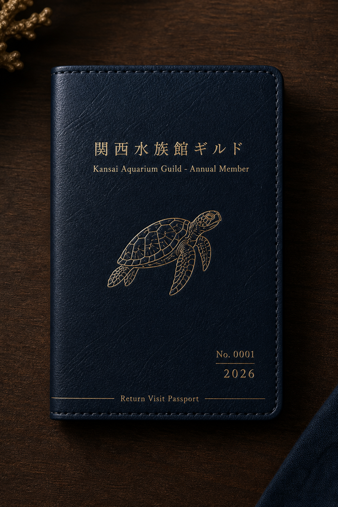
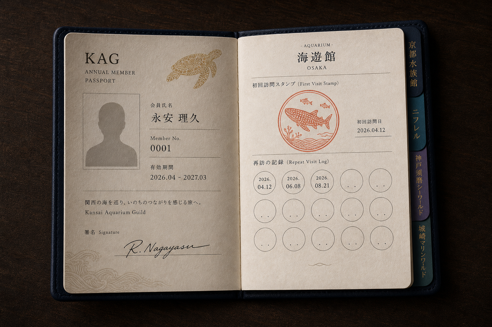
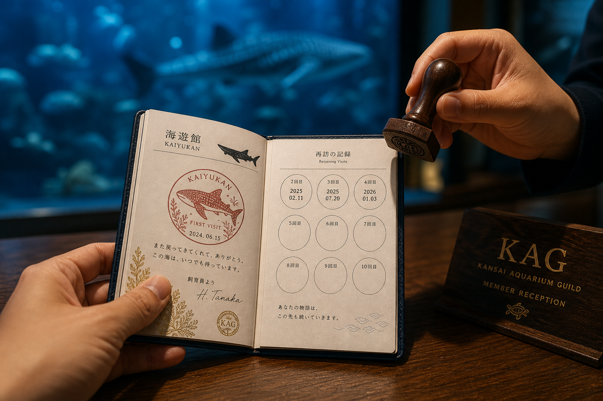
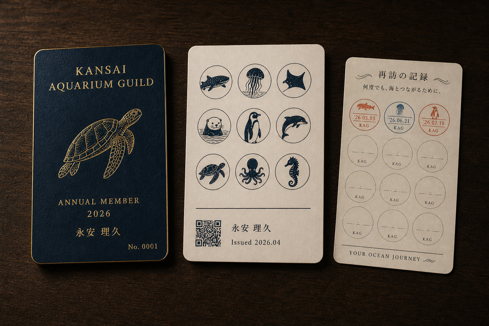
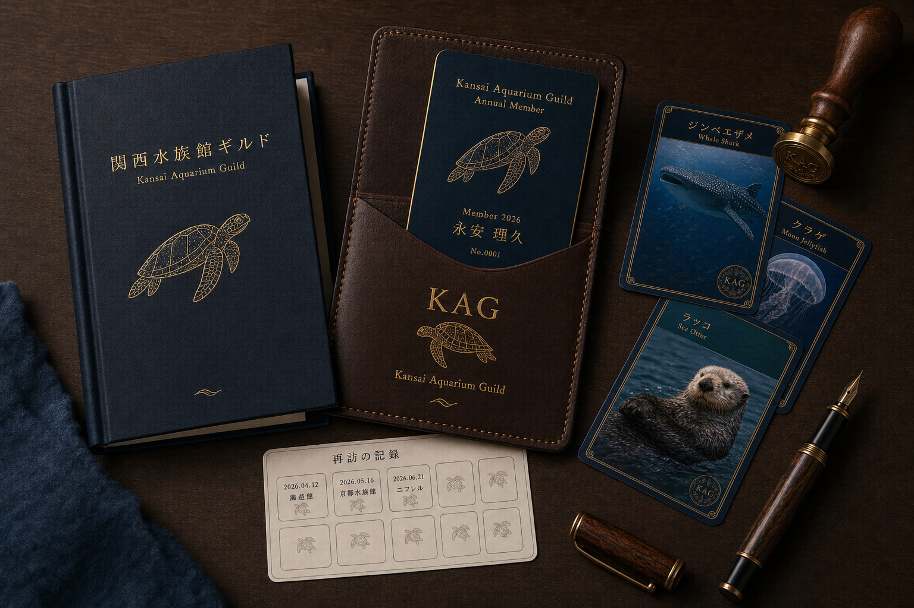
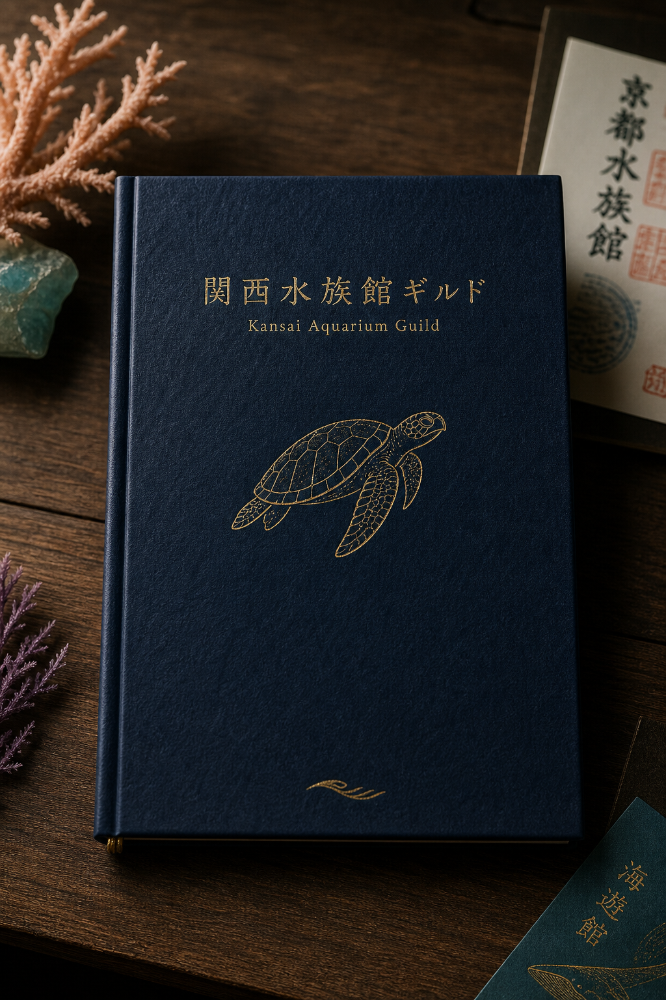
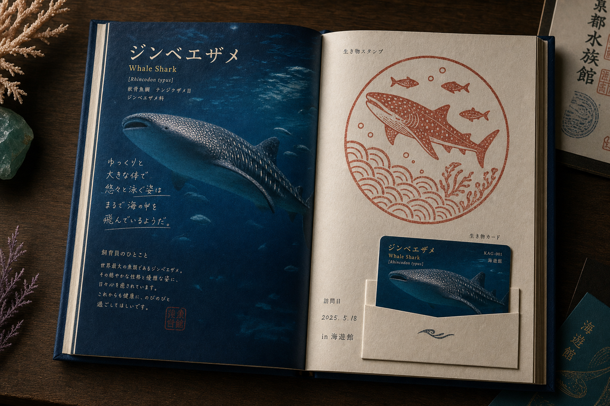
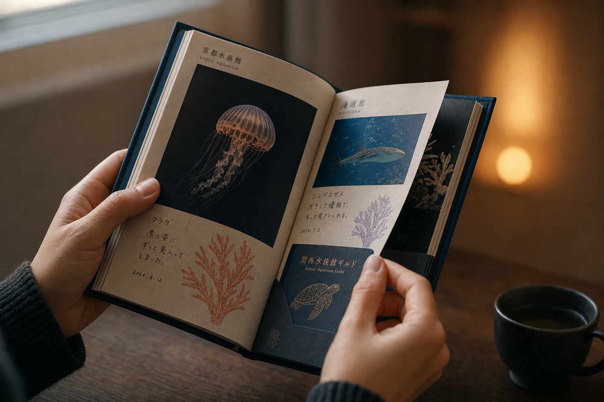
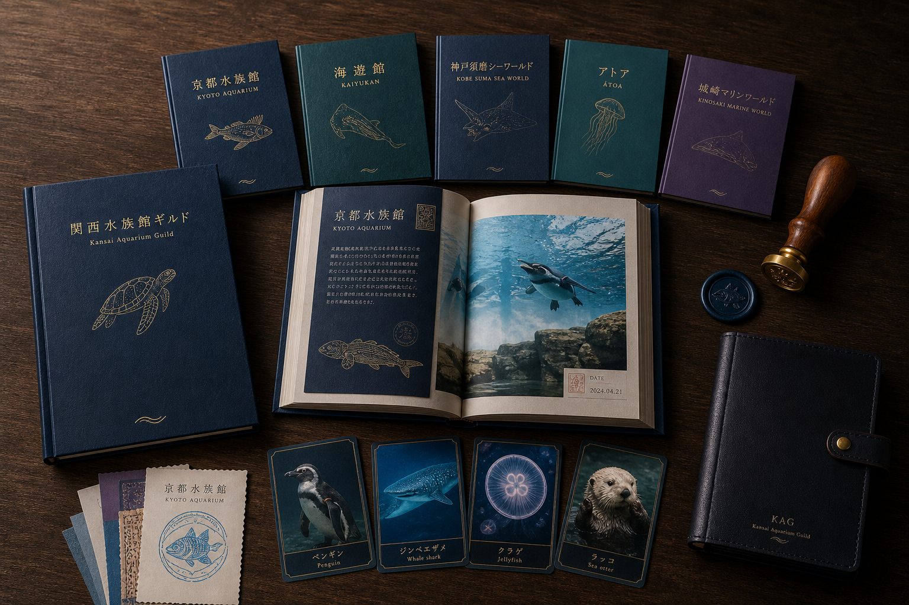
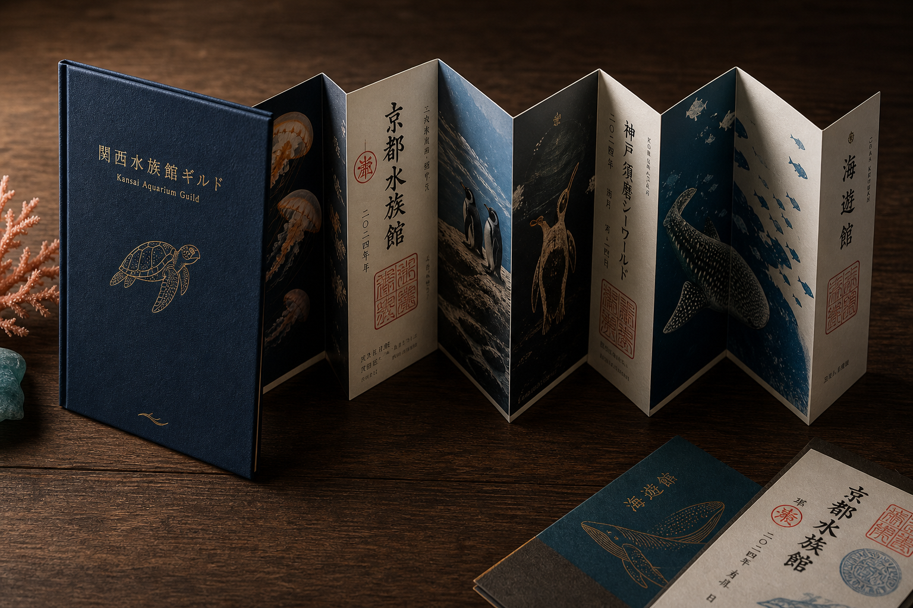
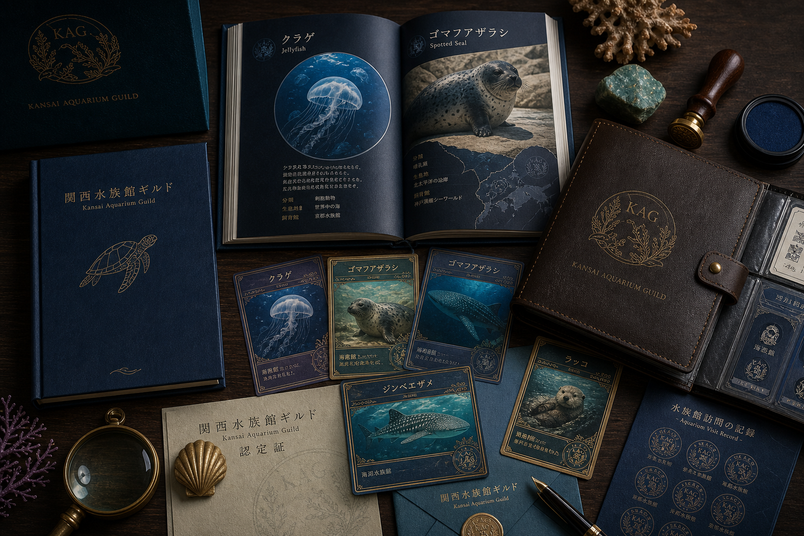
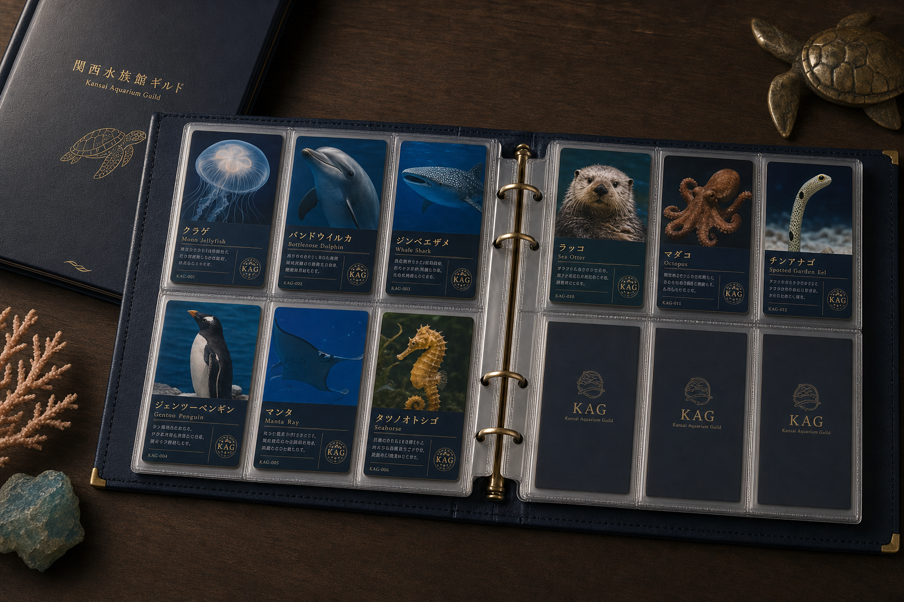
水族館は、誰のものか。
その問いに、3つの答えを同時に用意する。
他では得られない体験を
コンプ達成者だけが招かれる特別イベント。
バックヤードツアー、閉館後の館内ガイドナイト、館内お泊まり会、研究者との対話会、飼育員業務体験——コアファンの熱狂を、制度として支える。
学術の入口を、もっと面白く
水族館の学術的価値を、子供にも伝わる形に。
「マンガ日本の歴史」方式で各館の代表生体を物語化。種の特徴、進化、生態系を、エンタメと一緒に届ける。次世代の海洋生物学者を育てる場へ。
水族館を、文化として豊かに
音楽・イラスト・漫画・写真・動画——水族館を愛するクリエイターと、新しい表現を作る。海の生き物を題材にした作品、飼育員さんの仕事を描くドキュメント、ライブの会場としての館。連合は、文化を育てる場にもなれる。
日本の水族館は、海外からの旅人にとって
「日本でしかできない体験」になり得る。
——その入り口を、まだ誰も作っていない。
欧米豪は2019年比で+50〜180%の伸長。一人当たり旅行支出は英国38.3万円、豪州38.2万円、フランス36.1万円——全体平均22.7万円の約1.5〜1.7倍。彼らは「日本でしかできない体験」のためなら、惜しまずに支払う。
ところが、彼らが日本で使う娯楽・サービス費は支出のわずか4.8%。買い物・宿泊・食事に比べ、体験の受け皿が圧倒的に足りていない。空白市場です。
各種の訪日人気ランキングでは、関西の水族館にも欧米客の高評価レビューが多数集まる。GoogleマップやTripAdvisorを見れば、海外の観光客が日本の水族館を「想像以上に良かった」と発信している。
ただ——「複数の水族館を巡る」訪日ツアー商品は、国内にも海外にも、まだ存在していません。御朱印巡り、温泉巡り、寺社巡りは観光商品として成立している。水族館巡りも、同じ文脈で成立する素地はあるはずです。
共通年パスは、海外からの旅人にとって「複数館を巡るチケット」。多言語ガイド、飼育員ガイドツアー、夜間バックヤード見学——これらは欧米客が支払いたい単価帯（一回数千〜数万円）にぴったり収まる体験です。
「Japan aquarium tour」を検索しても、まだ何も出てこない。だからこそ、関西から始める意味があります。万博2025のレガシーとして、世界に届く水族館の旅を作る。
各館の水槽をカメラで繋ぐ。すでに鴨川シーワールド等で成功事例あり。家でも仕事中でも、いつでも水族館に「いる」感覚を届ける。
YouTubeで、飼育員さんが次の館の飼育員さんへバトンを繋ぐリレー形式。業界内のリスペクトを可視化し、視聴者は連合の輪を体感できる。
各館を持ち回りで撮影、編集チームと配信チャンネルを統一。個別館では届かない規模のリーチで、業界全体のコンテンツ力を上げる。
その館でしか手に入らない、生き物トレカ。漁師カード方式の現代版。コレクション体験として展開可能。
音楽・イラスト・漫画——水族館を愛するクリエイターと一緒に、新しい表現を作る。水族館を、文化として豊かにする。
コンプ達成者だけが招かれる、閉館後の館内ツアー、お泊まり会、研究者との対話会。プレミアム体験の核。
これだけ多様な館が、これだけの距離に集まっている地域は、世界でも稀です。
ここで成功すれば、全国の水族館からも「入りたい」という声が、必ず上がる。
体制も、座組も、これからです。
ただ、進めるならこの3つだけは外したくない、と考えています。
取材・撮影・販促物の制作・運営オペレーションは、なるべく各館の外側で吸収する仕組みにしたい。各館にお願いするのは「うちのアイドル生体を教えてください」程度の、ごく軽い関わりに留めたいと思っています。
新しい人手が必要になる部分は、各館の業務にではなく、連合側で受け止められる形を探したい。各館にお願いするのは、物販コーナーの一角の提供や、通常オペの範囲内での販売など、無理のない協力に留めたい。
各館の独自性を奪うことはしません。むしろ、連合の中でこそ、各館の個性はもっと際立つはず。健全な切磋琢磨は続けながら、業界全体のパイを広げる協働でありたい。
それぞれの水族館の魅力を、
語り合うような場所を作りたいのです。
水族館を愛する者として、
業界の未来を、共に考えませんか。